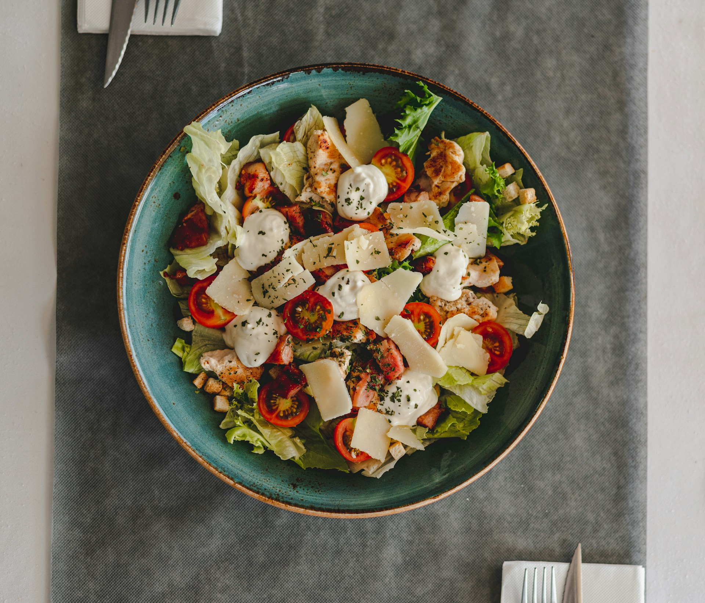

Home
Salad

Description
Salads come in many forms, from light garden mixes to hearty meals packed with flavor.
They combine fresh greens, colorful vegetables, and tasty dressings, making them a healthy and refreshing choice.
Simple to prepare and easy to customize, salads can be enjoyed as a side or a main dish.
But here we're focusing on the classic Caesar salad.
Crisp romaine lettuce, juicy tomatoes, crunchy croutons, and shaved parmesan come together with a creamy dressing.
It's a timeless salad that balances freshness with rich, savory flavor.
Light yet satisfying, the Caesar salad is always a crowd favorite.
Ingredients
- Romaine lettuce (chopped)
- Fresh tomatoes (sliced or diced)
- Croutons
- Parmesan cheese (shaved or grated)
- Caesar dressing
- Lemon juice (optional, for extra freshness)
- Salt and black pepper
Steps
- Wash and chop the romaine lettuce into bite-sized pieces.
- Slice fresh tomatoes and add them to the bowl with the lettuce.
- Add crunchy croutons and sprinkle generously with parmesan cheese.
- Drizzle Caesar dressing evenly over the salad.
- Toss gently until the lettuce, tomatoes, and toppings are coated.
- Season with salt, black pepper, and a squeeze of lemon juice for brightness.
- Serve fresh and enjoy your upgraded Caesar salad.